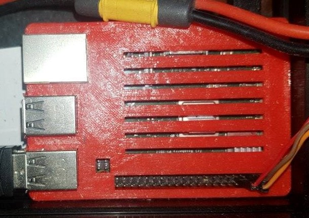

This site is hosted on Nginx running on Raspberry Pi Zero W 2. RpiZ2 is quite powerful embedded system and combined with Nginx efficiency is enough for simple web app hosting. However to host this site from home I had to find way to not break contract with my ISP and use DDNS. This might cause additional latency and extra bandwith overhead. However this website serves mostly as PoC and will be put offline in near future.
First instance was running on Raspberry Pi 3 and Apache. However I found that Nginx is better tailored for single board CPUs. Also since Nginx consumes less resources I could scale down by replacing RPi3 with RPi Zero.